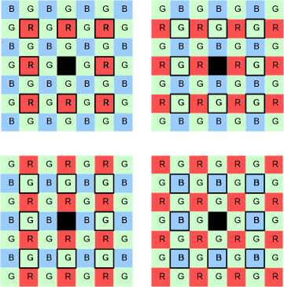
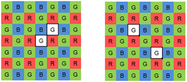
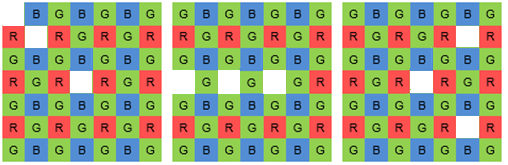

Defective pixels can be caused by the following:
- Imperfections in the semiconductor processing of the sensor module (CMOS or CCD) – During manufacturing, bad pixels or clusters can be caused by leakage to or from the well, abnormal pixel sensitivity, or resistance losses.
- Dust introduced when lens is mounted – A dust particle can fall on top of the sensor when the lens is mounted.
- Age of the sensor module – Over time, a sensor module accumulates more bad pixels.
For a sensor that uses the Bayer pattern, if the value of a hot pixel value is significantly higher than its neighbors or if the value of a cold pixel value is significantly lower than its neighbors, the bad pixel correction (BPC) and bad couplet correction (BCC) module evaluates it for correction. The following figure shows a single bad pixel in the center (black square) with its eight neighboring pixels (outlined) on the same channel.

Two neighboring defective pixels are called couplets. The BCC module can correct couplets that are in the same channel or cross-channel as shown in the image.

BPC/BCC does not correct clusters of three or more bad pixels, such as those shown in the figure.

- MP is the maximum pixel value from among the eight neighboring pixels of the same channel
- Fmax is a user-defined threshold factor that specifies which pixels to correct
- BPC offset is a user-defined adjustment value that further refines the threshold for a bad pixel
- If the value of the center pixel is greater than the result, replace the center pixel with the value of MP. If the center pixel value is less than or equal to the result, do not change the center pixel value.
The following figure is a sample plot of the hot pixel equation. 
- mP is the minimum pixel value from among the eight neighboring pixels of the same channel
- Fmin is a user-defined threshold factor that specifies which pixels to correct
- BPC offset is a user-defined adjustment value that further refines the threshold for a bad pixel
- If the value of the center pixel is less than the result, replace the center pixel with the value of mP. If the center pixel value is greater than or equal to the result, do not change the center pixel value.
The following figure is a sample plot of the cold pixel equation. 
For similar single pixel correction on an zzHDR pattern, see the DSBPC submodule in the PDPC module.
Coordinating BPC/BCC with other IFE modules
- BPC/BCC does not rely on other modules to be tuned, but if the BPC/BCC module is not properly tuned, all modules that follow it in the pipeline are impacted
- For BPC/BCC tuning, only enable the basic modules that are needed to result in final YUV images
- Consider disabling BPC/BCC while tuning other modules to avoid any negative impact of untuned pixel correction parameters.